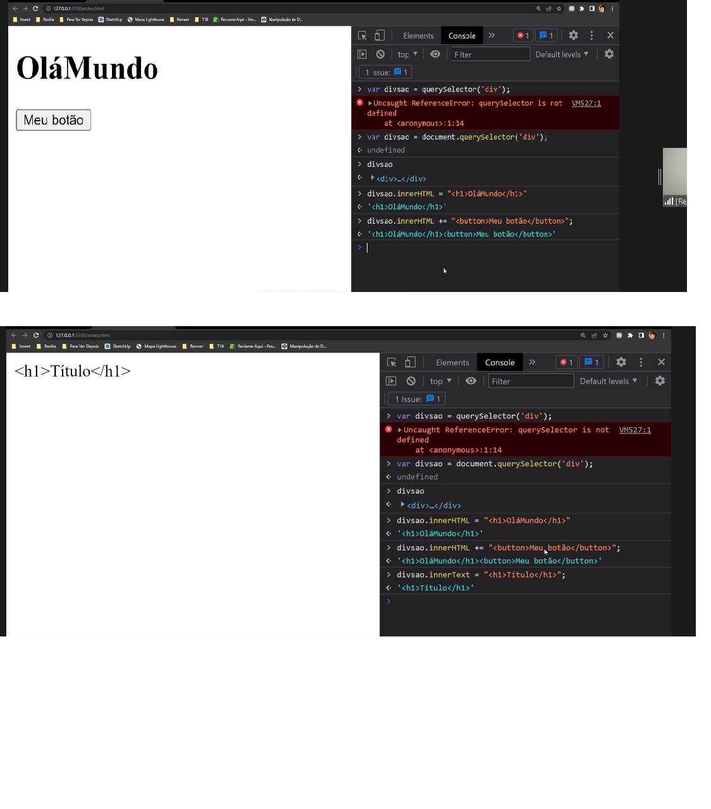

O TEXTO dentro de uma tag e o style, imagens, é um atributo de um elemento innerText é um atributo, para mudar ele é como mudar o valor de uma variavel, vc muda usando '=' botao.innerText = 'mudaotexto' 
loreipsum